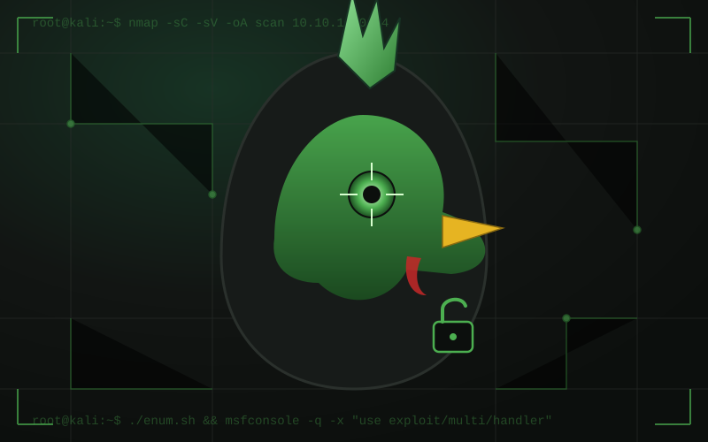

All About Me
Before IT, I spent years in industrial gases, oil, and international business — work that took me around the world and taught me how large, complex operations actually run. I'm now a developer and enterprise architect with years of experience designing cloud infrastructure and networks for production systems. During the day that means architecting for scale, security, and reliability; outside of it, I chase the same problems for fun — just with fewer meetings and more monsters.
Lately a good chunk of my personal time goes into exploring and building with AI models — figuring out how to take one from "interesting idea" to something that actually does useful work. It's the same systems thinking I use in cloud architecture, just pointed at a different kind of infrastructure.
I also spend time on robotics and automotive engineering projects, where the work moves from the cloud down to the metal — embedded boards, sensors, and machines that have to behave correctly in the real world, not just in a terminal.
And when the terminal is exactly where I want to be, I'm doing network penetration testing — working through Hack The Box-style boxes and labs, and standing up my own attack environments, Kali Linux builds included, to practice against realistic scenarios end to end.
The name "Reaper" came from the job; the "Rooster" came from home — I've got a yard full of actual chickens, and the name found its way into my games and projects. Between the infrastructure work, the AI experiments, the games, and the robots, this site is where I keep track of it all. Check out the Projects page for the details, or browse the repos directly on GitHub.
Areas I Work In
The recurring themes across my projects, day job and side projects alike.
Cloud & Enterprise Architecture
Designing and running cloud infrastructure — AWS, Terraform-managed stacks, and the network design that ties it together at enterprise scale.
AI Model Building & Transformers
Hands-on work with transformer architectures — training, fine-tuning, and applying models to real problems rather than just demos.
Robotics & Automotive Engineering
Embedded systems and robot agents, plus automotive engineering projects that bring software down to hardware that has to work in the field.
Game Development
Full indie builds — design, code, and art — including the Captain Monster series showcased on the Projects page.
Pentesting & Security
Where the "Reaper" side comes out — network penetration testing, CTF-style labs, and the environments built to practice in.

Network Penetration Testing
Hands-on offensive security — working through Hack The Box-style boxes and labs, plus building and maintaining my own attack environments and practice ranges, including custom Kali Linux builds.

Custom Kali Linux Build
A purpose-built Kali Linux image I maintain for pentesting and lab work — a curated tool loadout (rather than the full default set) trimmed to what actually gets used in engagements, plus custom scripts and automation for recon and setup, and hardening and persistence tweaks so the environment survives snapshots and re-deploys cleanly. Repo is private, but feel free to reach out if you'd like a look.